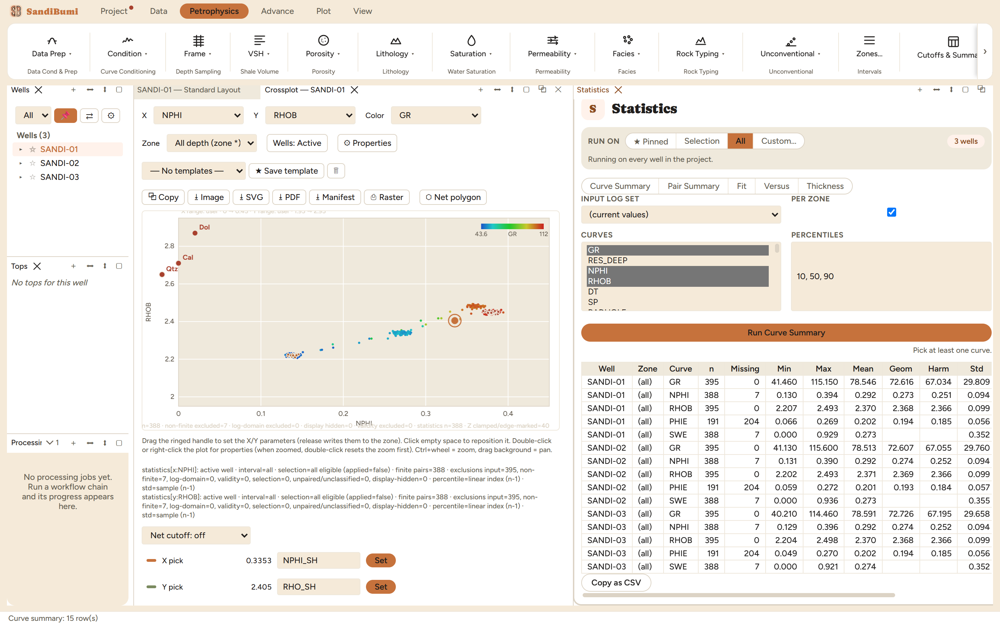

The Statistics pane produces the numbers a report quotes: per-well,
per-zone summary tables over any set of curves, as tables rather than
pictures. Reach for it when the question is "give me the table": a curve
summary across the field, a paired comparison, a fit, a thickness
inventory. The plots answer "what does it look like"; this pane answers
"what do I write down".
The pane

Curve Summary over GR, NPHI, RHOB, PHIE and SWE on all three
wells: 15 rows, each accounting its own n and Missing before any
statistic.
RUN ON is the same well-scope pill every batch tool uses:
Pinned, Selection, All, or Custom, with the active well group filtering
the list.
Five modes: Curve Summary, Pair Summary, Fit,
Versus, Thickness. The input log set select means the
table can be run against a specific versioned set, not only current
values.
Percentiles are yours to declare (10, 50, 90 by default); Per zone
splits every row by the zone framework.
Running with nothing selected refuses with "Pick at least one curve."
rather than defaulting to everything.
Step by step
Open Petrophysics ▸ Statistics…, set the well scope, pick the
curves and percentiles, and press Run Curve Summary.
Read the n and Missing columns before the means (see below), then
Copy as CSV to take the table wherever the report is being
written.
Reading the result
Each row carries n, Missing, Min, Max, Mean, Geom, Harm, Std and the
declared percentiles. On the example wells the accounting is the story: GR
has 395 samples with 0 missing, NPHI 388 with 7 (the washout), and PHIE 191
with 204 missing, because porosity exists only where the porosity module
answered. Two cells are deliberately empty: SWE's geometric and harmonic
means, because the curve contains zeros and a geometric or harmonic mean of
data containing zero is undefined. The pane leaves the cell blank rather
than inventing a number, the same blank-is-not-zero rule the workbook export
follows.
QC and pitfalls
Quote n with every statistic. PHIE's mean of 0.202 is a
191-sample statement about the interpreted interval, not a whole-well
average; the Missing column is what makes that visible.
Pick the mean for the physics. Arithmetic, geometric and
harmonic means answer different questions (harmonic for series flow,
geometric for log-normal permeability); the table carries all three so
the choice is explicit.
Zones first, then statistics. A whole-well mean over a layered
section averages rock types together; run Per zone and quote the zone
rows.